Elliptic functions¶
Contents
Elliptic integrals (ellipe(), ellipk())¶
- mpmath.functions.ellipe(*args, **kwargs)¶
- Complete elliptic integral of the second kind, E(m). Note that the argument is the parameter m = k^2, not the modulus k.
- mpmath.functions.ellipk(*args, **kwargs)¶
- Complete elliptic integral of the first kind, K(m). Note that the argument is the parameter m = k^2, not the modulus k.
Jacobi theta functions (jtheta(), djtheta())¶
- mpmath.elliptic.jtheta(n, z, q)¶
Computes the Jacobi theta function
 , where
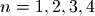. The theta functions are functions of two
variables:
, where
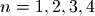. The theta functions are functions of two
variables: is the argument, an arbitrary real or complex number
is the argument, an arbitrary real or complex number is the nome, which must be a real or complex number
in the unit disk (i.e.
is the nome, which must be a real or complex number
in the unit disk (i.e.  )
)
One also commonly encounters the notation 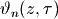 in the literature. The variable 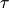 is called the parameter and can be converted to a nome using the formula 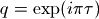. Note the condition
requires
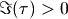; i.e. Jacobi theta functions are defined for
in the upper half plane.Other notations are also in use. For example, some authors use the single-argument form 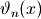. Depending on context, this can mean jtheta(n, 0, x), jtheta(n, x, q), or possibly something else. Needless to say, it is a good idea to cross-check the definitions when working with theta functions.
Definition
The four Jacobi theta functions as implemented by jtheta() are defined by the following infinite series:
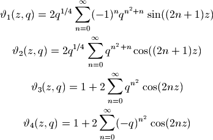
For 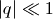, these series converge very quickly, so the Jacobi theta functions can efficiently be evaluated to high precision.
Examples and basic properties
Considered as functions of
, the Jacobi theta functions may be
viewed as generalizations of the ordinary trigonometric functions
cos and sin. They are periodic functions:>>> from mpmath import * >>> mp.dps = 15 >>> print jtheta(1, 0.1, 1/5.) 0.117756191842059 >>> print jtheta(1, 0.1 + 2*pi, 1/5.) 0.117756191842059
Indeed, the series defining the theta functions are essentially trigonometric Fourier series. The coefficients can be retrieved using fourier():
>>> nprint(fourier(lambda x: jtheta(2, x, 0.5), [-pi, pi], 4)) ([0.0, 1.68179, 0.0, 0.420448, 0.0], [0.0, 0.0, 0.0, 0.0, 0.0])
The Jacobi theta functions are also so-called quasiperiodic functions of
and , meaning that for fixed ,
and 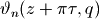 are the same
except for an exponential factor:>>> tau = 0.3*j >>> q = exp(pi*j*tau) >>> z = 10 >>> print jtheta(4, z+tau*pi, q) (-0.682420280786035 + 1.5266839997214j) >>> print -exp(-2*j*z)/q * jtheta(4, z, q) (-0.682420280786035 + 1.5266839997214j)
The Jacobi theta functions satisfy a huge number of other functional equations, such as the following identity (valid for any
):>>> q = 0.3 >>> print jtheta(3,0,q)**4 6.82374408935276 >>> print jtheta(2,0,q)**4 + jtheta(4,0,q)**4 6.82374408935276
Extensive listings of identities satisfied by the Jacobi theta functions can be found in standard reference works.
The Jacobi theta functions are related to the gamma function for special arguments:
>>> print jtheta(3, 0, exp(-pi)) 1.08643481121331 >>> print pi**(1/4.) / gamma(3/4.) 1.08643481121331
jtheta() supports arbitrary precision evaluation and complex arguments:
>>> mp.dps = 50 >>> print jtheta(4, sqrt(2), 0.5) 2.0549510717571539127004115835148878097035750653737 >>> mp.dps = 25 >>> print jtheta(4, 1+2j, (1+j)/5) (7.180331760146805926356634 - 1.634292858119162417301683j)
Possible issues
For 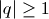 or 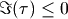, jtheta() raises ValueError. This exception is also raised for 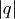 extremely close to 1 (or equivalently very close to 0), since the series would converge too slowly:
>>> jtheta(1, 10, 0.99999999 * exp(0.5*j)) Traceback (most recent call last): ... ValueError: abs(q) > Q_LIM = 1.000000
Implementation note If z.imag is close to zero, _jacobi_theta2 and _jacobi_theta3 are used, which compute the series starting from n=0 using fixed precision numbers; otherwise _jacobi_theta2a and _jacobi_theta3a are used, which compute the series starting from n=n0, which is the largest term.
TODO write _jacobi_theta2a and _jacobi_theta3a using fixed precision.
- mpmath.elliptic.djtheta(n, z, q, nd=1)¶
For an integer 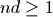, computes the 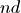:th derivative with respect to
of the Jacobi theta function 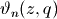:>>> from mpmath import * >>> mp.dps = 15 >>> print djtheta(3, 7, 0.2) -0.795947847483158 >>> print diff(lambda x: jtheta(3, x, 0.2), 7) -0.795947847483158
For additional details, see jtheta().
Jacobi elliptic functions (jsn(), jcn(), jdn())¶
- mpmath.elliptic.jsn(u, m)¶
- Implementation of the jacobi elliptic sn function in term of jacoby theta functions. u is any complex number, m must be in the unit disk
- mpmath.elliptic.jcn(u, m)¶
- Implementation of the jacobi elliptic cn function in term of theta functions. u is any complex number, m must be in the unit disk
- mpmath.elliptic.jdn(u, m)¶
- Implementation of the jacobi elliptic dn function in term of theta functions. u is any complex number, m must be in the unit disk